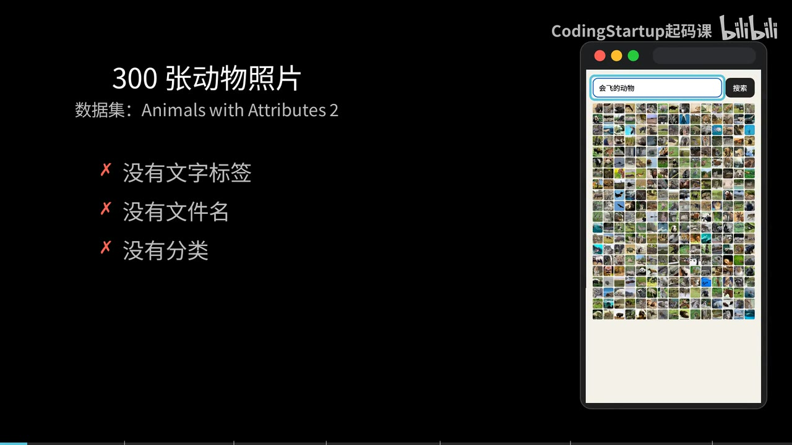
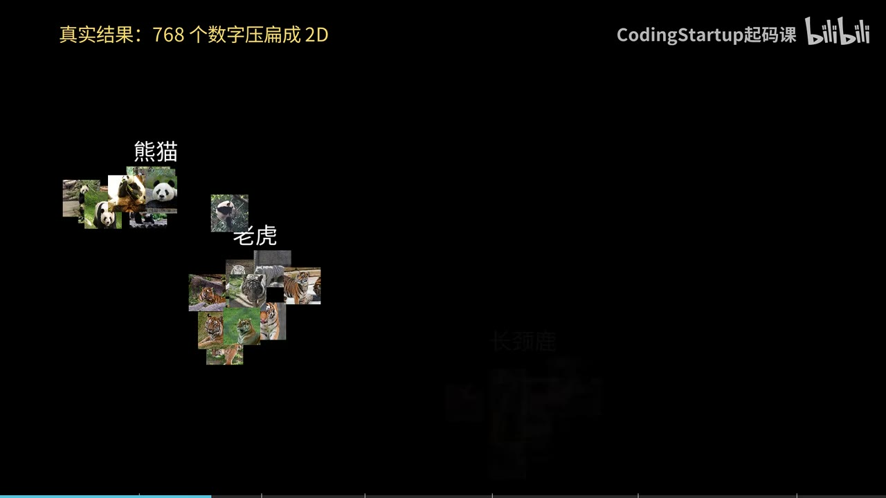
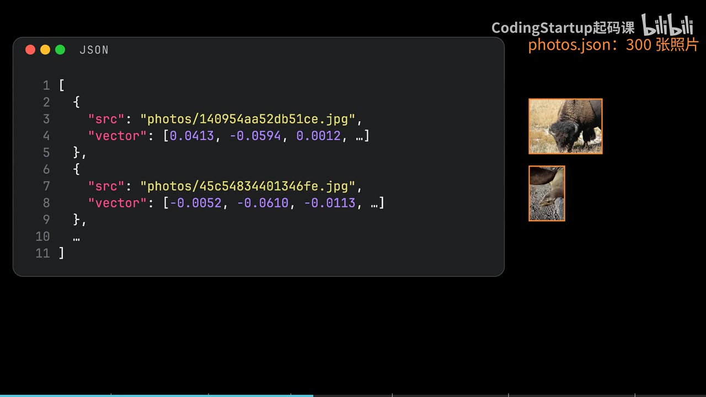
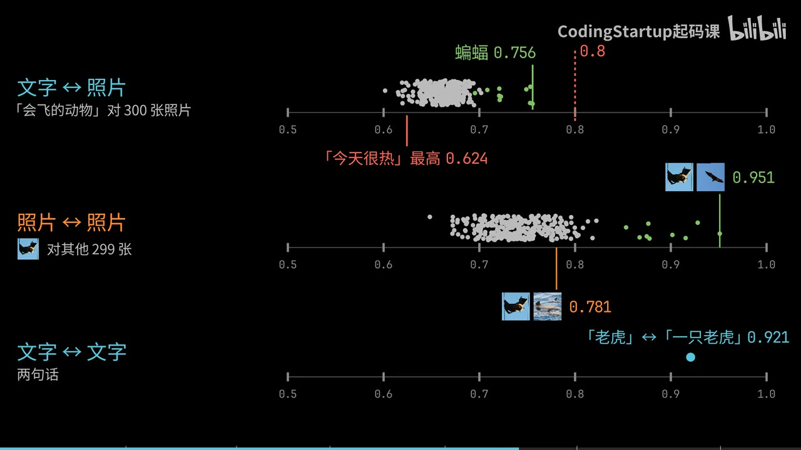
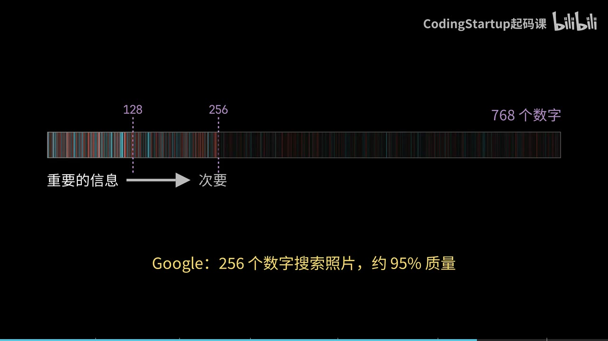

炸鸡的鳞片是抛出来的：一份家常脆皮炸鸡
想做炸鸡，最先劝退人的常常是配料表。牛肉粉、大蒜粉、咖喱粉，为了一顿炸鸡买三罐，剩下的放到过期。这套做法大部分用家里常备的东西：面粉、淀粉、鸡蛋、牛奶、生抽、蚝油、小苏打、黑胡椒、盐、糖、辣椒粉和炸油；主要用料按克称好，葱姜蒜等按需增减。鸡翅、鸡腿、鸡排，一次都能炸。
真正决定成败的是三个动作：腌够时间、把鸡块抛起来、两次油温守住（初炸 160℃、复炸 210℃）。配料只是起点。
三种肉，三种处理
鸡腿 560 克，是三样里最厚的。竖着打花刀，一是入味，二是炸得快。打的时候把鸡皮往上提一提，花刀打完形状还留得住。
鸡翅 330 克，整个的不用打花刀。怕有腥异味，可以从中间对半切开，血水好出，也更容易入味。
鸡排就是鸡胸肉，340 克。一整块比较大，先从中间对半切开，两片就够——切厚一点能留住更多汁水。再切成小块，方便炸。切好用刀背敲一敲，帮助入味。
 三种主料的克数，加上两组腌料、面糊和炸鸡粉的用量，都在这一张里
三种主料的克数，加上两组腌料、面糊和炸鸡粉的用量，都在这一张里
鸡翅和鸡腿放进清水里泡半小时到 1 小时，把血水泡出来。味觉不敏感、或者不在意这点腥味的，这一步可以不做。鸡胸肉不用泡——全瘦肉，几乎没有血水也没有异味，切之前简单洗一下就行。
 鸡胸肉从中间对半切开，两片足够；留厚一点，汁水才留得住
鸡胸肉从中间对半切开，两片足够；留厚一点，汁水才留得住
 鸡翅鸡腿在清水里泡着，半小时起步，血水泡出来再腌
鸡翅鸡腿在清水里泡着，半小时起步，血水泡出来再腌
先腌鸡排：小苏打和牛奶是做嫩的
趁着鸡翅鸡腿泡水，先把鸡排腌上，单独腌。
1 克食用小苏打，让水分在腌制时更容易进到鸡胸肉里；肉里水多了，吃起来自然嫩滑。接着是辣椒粉 1 勺尖（2 克），增加层次。白胡椒粉去腥增香，黑胡椒碎增加风味、也去腥增香。1 勺尖白糖（3 克）中和味道、提鲜。1 勺生抽（10 克）、1 勺蚝油（10 克），提鲜也提咸——不喜欢蚝油，可以换成等量生抽。最后 50 克纯牛奶，嫩化肉质，再添一点奶香。
抓捏 1 分钟，放进冰箱。最短腌 2 小时；不着急就过夜，调料和水分才有时间进到肉里，鸡排才多汁。这套腌法不只用于炸鸡：健身减脂的，腌好直接放空气炸锅烤就行。
鸡翅鸡腿：同一套料，加量，另加葱姜蒜
泡好的鸡翅鸡腿取出来，控干水分或者擦干。表面干一点，腌制时更容易入味。
腌料和鸡排是同一套，多数调料按量增加；小苏打、牛奶、黑胡椒碎维持原量。另外鸡翅鸡腿比鸡排的异味重，要额外加葱姜蒜去腥，不计量，多点少点都行。
| 用料 |
鸡排（鸡胸肉 340 克） |
鸡翅鸡腿（330 克 + 560 克） |
| 食用小苏打 |
1 克 |
1 克 |
| 辣椒粉 |
1 勺尖，2 克 |
半勺，5 克 |
| 生抽 |
1 勺，10 克 |
3 勺，30 克 |
| 蚝油 |
1 勺，10 克 |
2 勺，20 克 |
| 白胡椒粉 |
0.5 克 |
1 克 |
| 黑胡椒碎 |
1 克 |
1 克 |
| 白糖 |
1 勺尖，3 克 |
半勺，5 克 |
| 牛奶 |
50 克 |
50 克 |
| 葱姜蒜 |
— |
不计量，随意增减 |
调料都放好之后，把葱姜蒜捏碎、捏出汁液，去腥的效果才发挥得出来。抓捏 2 分钟，放进冰箱，时间同样推荐过夜。不太在意的话，鸡翅、鸡排、鸡腿放一起腌也没问题。
面糊 1:0.5，炸鸡粉更简单
炸鸡面糊：中筋面粉 150 克、淀粉 75 克，比例 1:0.5。再放鸡蛋 2 颗、牛奶 120 克，混合成面糊，放在旁边备用。克数是给不想自己调配的人，不用那么精确。
炸鸡粉：中筋面粉 300 克、淀粉 150 克、黑胡椒碎 2 克、食盐大半勺（8 克）、食用小苏打 0.5 克，全部混匀就好。淀粉用玉米淀粉或土豆淀粉都行。
很多网上的版本要加牛肉粉、大蒜粉、咖喱粉。家里做一顿炸鸡，不会为了这个买一堆用不上的料，所以这一版在好吃的基础上尽量简化。
鳞片是抛出来的
腌好的鸡肉拿出来，鸡排一眼就能看出很嫩、很爆汁。鸡翅鸡腿也放进来，把腌它们的葱姜和牛奶去掉。倒入调好的面糊，混合均匀，让面糊裹住每一块。
裹粉是整件事里最重要的一步：把裹好面糊的鸡块放进炸鸡粉里，再用手把鸡块从粉里抛起来。出鳞片其实很简单，关键是不要用手抓着鸡块往粉里按。抛起来的时候，表面的面糊受重力影响往外拉出，拉出的那一瞬间，最外层的干炸粉就被滴落的面糊包住，鳞片就形成了。一直抛就行，可以稍用力。最后抖一下，把多余的炸粉抖掉。鸡翅、鸡腿、鸡排都这么操作。
 抛的时候可以稍用力：面糊在重力下往外拉，滴落时被外层的干粉包住，鳞片就出来了
抛的时候可以稍用力：面糊在重力下往外拉，滴落时被外层的干粉包住，鳞片就出来了
160℃ 初炸，按部位定时间
油温烧到 160℃。没有测温工具，就拿筷子插进油里，3~4 秒之内浮起一些小泡泡，油温就够了。
初炸期间保持中小火。鸡肉下锅会把油温拉下去，所以一次别下太多，3~4 块就够，锅里的油温才稳得住。下的时候贴着油面往下放，不要扔进去——油温很高，轻一点。
时间按部位分：小块鸡排 6~7 分钟，鸡翅 7~8 分钟，鸡腿最大，12~13 分钟。
 初炸的油温和火候：160℃，初炸期间保持中小火
初炸的油温和火候：160℃，初炸期间保持中小火
210℃ 复炸，半分钟之内
炸好的都捞出来。用细漏把锅里的残渣捞一捞，然后开大火，把油温升到 210℃，复炸一遍，外壳更酥脆。
没有测温工具就看锅边：油烧到锅边有点轻微冒烟，这个温度就够了。
复炸时间都一样，半分钟之内，看颜色调整，金黄了就捞出来。
 初炸过的鸡肉下进 210℃ 的油里，半分钟之内，金黄就捞
初炸过的鸡肉下进 210℃ 的油里，半分钟之内，金黄就捞
哪里可以省
写下来显得步骤多，真做起来很多地方可以简化：
- 泡水去血水，不在意可以不做。
- 鸡翅不打花刀，怕腥才从中间切半。
- 不介意的话，鸡翅、鸡排、鸡腿放一起腌。
- 这套腌法不只用于炸鸡，腌好直接放空气炸锅烤也行。
- 面糊的克数不用精确到个位数，比例对就行。
第一次做，先把三件事做对：腌够时间、把鸡块从粉里抛起来（别用手按）、两次油温守住——初炸 160℃、复炸 210℃。剩下的都能按自己的情况删。
一句话搜照片：分数为什么集体偏低，向量又该怎么切短
300 张动物照片，来自一个公开数据集 Animals with Attributes 2。没有文字标签，没有描述性的文件名，也没有分类。输入“会飞的动物”点搜索，前 9 张全是蝙蝠——有的在天上飞，有的倒挂在树上。

300 张照片没有任何文字标签、文件名或分类；输入“会飞的动物”，排在最前面的都是蝙蝠
第 10 张是一只山猫。换成“黑白色的动物”，出来的是斑马和熊猫，还有一只身上有黑点的豹。每张照片都没附带颜色信息，模型是直接从照片本身看出来的。
做这件事的是 EmbeddingGemma 2：Google 刚开源的多模态 embedding 模型，支持文字、图片、音频和视频，把它们统统变成 768 个数字，放在同一个空间里。这篇只讲文字和图片。所以一句话可以直接和一张照片比较。
先给结论：分数不能直接当门槛，看排名；向量可以切短，但切完要归一化。
文字和照片被放进了同一个空间
Embedding 模型会把一句话变成一串数字，意思接近的两句话，它们的数字指向的方向也接近。EmbeddingGemma 2 多做的一件事是：文字和照片各有自己的 encoder，但输出的都是同一个空间里的 768 个数字。
一次真实运行的结果：挑 5 种动物，每种 10 张照片，把每张照片的 768 个数字压扁成 2D 画出来——压成 2D 只是投影示意，聚类是真的，2D 上的距离要用全部 768 个数字算。老虎、熊猫、长颈鹿、海豚和大象各自聚成一堆。

五种动物各 10 张照片，真实数据压成 2D 的投影，各自成一堆
再把 3 句话放进去——老虎、熊猫、长颈鹿，用全部 768 个数字算，每句话最接近的 3 张照片都是对的动物。
要记住那张 2D 图只是示意。真正的距离，要用全部 768 个数字来算。
搜索是怎么搭起来的
一个页面，上面一个输入框，下面是 300 张照片。模型装在一台 DGX Spark 上，对外提供一个和 OpenAI 格式相同的 API。
先写一个 embed 函数：用 fetch 把请求 POST 到那个地址，body 里放两样东西——model，值是 EmbeddingGemma 2 的模型名；input，是要转换的文字。返回的 data 里第一项的 embedding 就是那 768 个数字：0.0092，-0.0368，一直往下。
这串数字的长度是 1。这里的长度指模长，不是数字的个数——模长是 1，两个向量的点积（dot product）就等于 cosine。
照片这边，每张都已经提前交给同一个模型算好了 768 个数字，存在 photos.json 里。每一项只有两样东西：照片在哪里，还有它的向量。

photos.json 的每一项只有照片位置和 768 个数字，没有一句说明这是什么动物
里面没有任何文字说明这张照片是什么动物。模型只看照片本身。
页面一打开就 fetch photos.json，把 300 张照片显示出来。再写一个 dot：一个 for 循环，把两串数字逐位相乘，再加起来——因为模长是 1，这就是 cosine。
点搜索的时候，先把输入的文字 embed 成 query，再和每张照片算 dot，作为这张照片的 score。然后，只留 score 大于 0.8 的，再从大到小 sort。
0.8 这个门槛，一张都过不去
先说清楚：开头那 9 张是去掉门槛后的结果；第一版加上 0.8，一张都没有。
运行，输入“会飞的动物”，搜索结果一张照片都没有。
把 300 张照片的分数放在一条轴上就明白了：最高的一张是蝙蝠，0.756。没有一张超过 0.8，全部挤在 0.6 到 0.76 之间。
再看另外两条轴。同一把尺子上，一句完全无关的“今天很热”，对照片最高也能到 0.624。两张蝙蝠照片之间是 0.951；一张蝙蝠和一张海豚也有 0.781，比正确的文字匹配还高。文字和文字之间，“老虎”和“一只老虎”是 0.921。

三条轴从上到下是文字对照片、照片对照片、文字对文字：文字对照片最高只有 0.756，照片之间能到 0.951
原因是文字和照片虽然在同一个空间，但各自聚在不同的区域。可以把这想成两把刻度不同的尺子：它们在同一个空间里，但两类的基准线不同，所以绝对分数不能直接比，顺序才有意义。于是文字对照片的分数会一起偏低。在这个演示里，前 9 名的排名仍然是对的；第 10 名开始出现不相干的结果。
所以不要用一个固定的数字做门槛，看排名就行。去掉过滤，sort 完再跑一次：前 9 张都是蝙蝠，第 10 张是山猫。另搜“在水里游泳的动物”，排在前面的才是河狸、河马、水獭、海豚，还有一只在水里的灰熊。
砍掉后面的数字，空间省下三分之二
每张照片 768 个数字，每个数字用 4 字节存，100 万张照片大约要 3 GB。
这个模型训练时会把最重要的信息放在最前面，所以可以只保留前 256 个，甚至前 128 个数字。Google 说，用 256 个数字来搜照片，仍然有大约 95% 的质量。

重要的信息排在前面的数字里；Google 给出的数字是：256 个数字搜照片，约 95% 的质量
写一个 shorten 函数，用 slice 取前 n 个数字。但切短之后，长度就不再是 1 了：前 256 个数字的长度只有 0.709。所以要把每个数字除以这个长度，让它变回 1。
然后 query 和每张照片都用 shorten 切到 256 个。768 变成 256，小了 3 倍；100 万张照片从大约 3 GB 变成大约 1 GB。
跑一下：用 256 个数字，排在前面的还是蝙蝠，和 768 个一样。再切到 128 个，前 10 张里松鼠、狐狸和河马挤了进来，蝙蝠只剩下 7 张。
所以切到多短，要拿你自己的数据去试。
四件可以带走的事
- 文字和照片在同一个 768 维空间里，所以一句话可以直接搜照片。
- 照片的向量提前算好存下来；搜索的时候只需要
embed 一句话，再和每张照片算 dot，然后排序。
- 在这个演示里，文字对照片的分数普遍偏低，不要用固定门槛，看排名。
- 想省空间就把向量切短，切完记得把长度除回 1。
想验证这套东西，最直接的办法是换成你自己的照片，输入不同的描述，看它能不能找到。
橘猫、三花、奶牛猫：这些名字大多说的是长相，不是品种
楼道口那只橘色的猫，路过的人都叫它“大橘”。旁边黑一块白一块的，叫奶牛猫；再远一点，黄、白、黑混在一起的那只，叫三花。这些名字听起来像品种，其实大多是在说它长什么样。三花猫不特指某一品种，黑猫泛指毛色通身黑色的猫。在中国本土猫里，进入过 CFA 登记的只有狸花猫。
这些名字大致分两类：橘猫、三花、奶牛猫、黑猫主要是毛色叫法；狸花猫、狮子猫、简州猫是地方类群。
古人给猫起名，主要看黑和白各长在哪儿；后面有一张黑白位置对照表。
狸花猫：中国唯一进过 CFA 登记的猫
狸花猫的名字来自身上的斑纹：棕色或深棕色，左右对称。宋朝就有“狸猫换太子”的故事，这个名字出现得很早。
 晋剧《狸猫换太子·二本审陈琳》，山西音像出版社出版发行；宋代就有“狸猫换太子”的故事
晋剧《狸猫换太子·二本审陈琳》，山西音像出版社出版发行；宋代就有“狸猫换太子”的故事
在猫里，它算高智商；有一种说法是，大致相当于三四岁孩子。跟其他家猫比，它更像一个优雅的猎手：身手矫健，活捉老鼠轻而易举。
它在国内和国外的身价也不一样。在国内很便宜，到了国外，一些猫舍能把它卖到上千元。它是中国本土猫里唯一一种进入过 CFA 登记的中国纯种猫——CFA 是做纯种猫登记的机构。它还有英文名，外国人更喜欢叫它“Dragon Li”，译过来是“狸龙”。
橘猫：名字是颜色，胖是真的
俗话讲“十个橘猫九个胖，还有一个压倒炕”。橘猫又名黄狸猫，也叫中国虎斑猫，背上的斑纹很漂亮，多是鱼骨刺和豹点。它大部分是公猫。
吃东西时，它没多少节制：给啥吃啥，吃啥都胖，有人开玩笑说它没有饱腹感，坐着吃、躺着吃、抢着吃。但它肠胃好，适应性强，不容易生病。靠表情包，它成了被很多铲屎官喜欢的田园猫；同时，也是流浪数量较多的猫。
在古代，它一点也不便宜。半橘的猫，古人叫“金背银床”；大橘叫“金丝虎”。
古人给猫起名，看的是颜色长在哪儿
奶牛猫是黑猫警长的原型，有个外号叫“喵界神经病”：别的猫都高傲优雅的时候，只有它在犯傻。它的长相忽高忽低，美的时候堪比布偶，丑的时候不忍直视，毛色变化无穷。
正因为变化多，古人给它留了三个名字：
| 长什么样 |
古人叫它 |
| 上黑下白 |
乌云盖雪 |
| 尾巴是黑的 |
雪里拖枪 |
| 只有四只爪是白的 |
踏雪寻梅 |
三个名字说的是同一件事：黑和白各长在哪儿。这套思路不只用在奶牛猫身上：橘猫的“金背银床”“金丝虎”，狮子猫的“尺玉霄飞练”，玳瑁的“滚地锦”，也都是从毛色上取的名字。
山东狮子猫的来路，有一种说法
山东狮子猫又叫临清狮子，是中国本土猫里的王者。一种流传的说法是，它来自波斯猫和鲁西狸猫的繁育。
 波斯猫与鲁西狸猫；一种说法认为狮子猫是两者的后代
波斯猫与鲁西狸猫；一种说法认为狮子猫是两者的后代
它直鼻梁、下巴强壮，颈毛长得像狮子，名字就是这么来的。主产地在山东省临清市。眼睛多为鸳鸯眼，就是两只眼睛颜色不一样，传说能给人带来好运。
古人管它叫“尺玉霄飞练”。据说季羡林也养过狮子猫。
黑猫，和黑里带红的玄猫
黑猫泛指通身黑色的猫。古书记载，黑猫是镇宅辟邪、招财之物；在中国的传统文化里，它寓意吉祥。它和孟买猫长得很像，身体也是漆黑色。
黑猫里还有一种特殊的：玄猫。“黑而有赤色者为玄”，赤就是红，所以玄猫是黑里带红的猫，也叫灵猫。它在古代是辟邪物，一直流传到现在。老话说，每当有灾难降临，它就会出现。
三花猫几乎都是母猫
三花猫一般指身上有黄、白、黑三种颜色的猫，不特指某一品种。绝大多数三花猫都是母猫。它的三种颜色分布得很规整，一块一块像拼接起来的，每块之间分界线明显。
玳瑁猫也常被算进三花，但颜色混在一起，没有明显色块分界，像把三种颜料搅在一起，白色可以很少，甚至几乎没有。世界上不存在花纹完全一样的三花。白色特别少的玳瑁，古人叫“玳瑁滚地锦”；白色较多的，叫“玳瑁猴彩霞”。
 身上白色特别少的玳瑁，古人叫它玳瑁滚地锦
身上白色特别少的玳瑁，古人叫它玳瑁滚地锦
四川简州猫：耳朵像有四只
四川简州猫因产自简州而得名。当地人把它当神猫，用来捕鼠。明清的时候，它是进贡给皇帝的全国四大土特产之一。它毛色驳杂，身形高大，动作异常敏捷。
它还有个名字叫“四耳猫”。所谓四耳，据说是耳朵的轮廓重叠，两大两小，耳中有耳，凑成四只。
想养一只，按这些挑
要活泼好动、能捕鼠的，四川简州猫和狸花猫通常比较合适。喜欢胖胖的猫，橘猫就对了。喜欢黑色的，可以看黑猫；喜欢黑里带红的，再考虑玄猫。喜欢长得独特的，可以考虑三花猫和奶牛猫。
挑之前，先想清楚你要的是什么样的猫：能捕鼠的、好抱的，还是看着特别的。橘猫、三花、奶牛这些名字能告诉你它长什么样，但里面没有品种这回事。